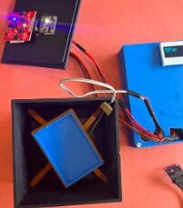
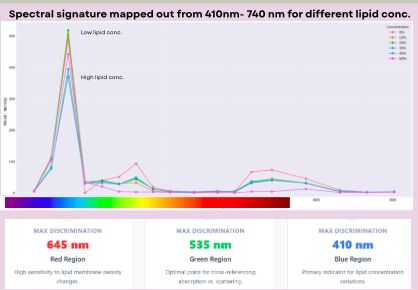

Arogya Dx
Arogya Dx is a point-of-care screening prototype for lipid profiles. I was interested in a system that did not depend on expensive reagents, laboratory infrastructure, trained personnel, or a 24-hour wait for results.
 An early Arogya Dx optical setup with the chamber, sensor board, and wiring visible. | Reading light instead of adding reagentsThe system captures plasma spectral signatures from 410–940 nm across ultraviolet, visible, and near-infrared regions. Different lipid concentrations change optical scattering, so the goal was to see whether those changes could become distinct, real-time, reagent-free signatures. |
 Microfluidic channels and samples used while working on blood and plasma separation. | Working with microfluidicsFor a team research project, I tracked red blood cells in a 1000 µm-wide microchannel at 3, 13, and 23 µL/s. I split the half-channel view into near-wall, centre, and far-wall zones; followed cells across 13 timed frames per zone in ImageJ; and calculated displacement, velocity, and trajectory. The centre zones converged toward a plug-like profile, while cells near the wall tumbled under high shear. The work made the cell-free plasma layer at the edges feel much less like a diagram and much more like something I had watched happen. |
 Building the device and preparing its optical testing setup. | Building the test setupI used a PDMS microfluidic platform and prepared PEG–water solutions with egg yolk as a lipid analogue at concentrations from 1:9 through 5:5. I centrifuged samples before testing, collected optical data with a TCS34725 RGB sensor and an AS7265 TRIAD spectral sensor, and enclosed the setup in a light-isolated chamber to reduce interference. |
 Spectral signatures mapped for different lipid concentrations. | Checking the signaturesI tested two plasma samples with distinct lipid profiles under identical conditions and mapped their spectral signatures. The strongest separation appeared around 645 nm, 535 nm, 410 nm, and in the near-infrared range. Blue reflectance near 410 nm dropped as lipid concentration rose, and the plasma samples followed the same overall patterns. |